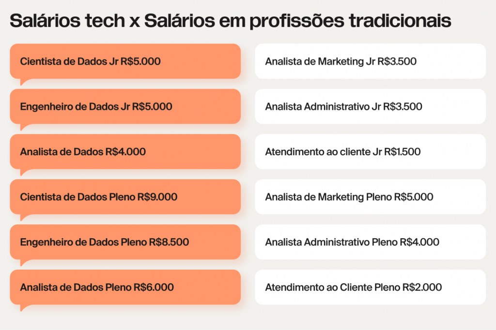

Setor de tecnologia tem salários competitivos
Enquanto gerações anteriores valorizavam a estabilidade, os profissionais de hoje buscam a reinvenção. Um estudo do LinkedIn revela que 75% dos brasileiros consideram mudar de área, motivados por crescimento, qualidade de vida, insatisfação e melhores salários. Nesse cenário, o setor de tecnologia se destaca como a principal opção, com previsão de mais de 500 mil vagas e remunerações 2,9 vezes superiores à média nacional até 2025.
“A pandemia acelerou a transformação digital e despertou novas prioridades. Millennials revisitam a qualidade de vida, enquanto a Geração Z entra no mercado questionando velhos padrões. Essa mistura trouxe mudanças profundas”, afirma Luiza Costa, gerente de Sucesso de Carreira na TripleTen, escola de tecnologia dos EUA que vem registrando um aumento de alunos no Brasil.

Crescimento acelerado e salários competitivos
Luiza, engenheira agrônoma de formação, é exemplo vivo de transição. Hoje, atua mentorando alunos da TripleTen em áreas como Análise de Dados, Ciência de Dados, Desenvolvimento Web e Análise de Qualidade. “O sucesso está diretamente ligado à dedicação de cada um”, ressalta.
Profissões como cientista de dados estão em alta devido ao volume crescente de informações globais, que deve atingir 463 exabytes em 2025, segundo o Fórum Econômico Mundial. A remuneração inicial reflete essa valorização: varia de R$ 4.000 a R$ 5.000, podendo chegar a R$ 9.000 para profissionais com experiência intermediária. Em contraste, setores como administração e marketing oferecem salários entre R$ 1.500 e R$ 3.500.
Histórias reais de transformação
Patricia Costa, ex-Au Pair nos EUA, encontrou na tecnologia um caminho para crescer. “Morar com uma família que trabalhava com dados me inspirou a entrar na área”, conta a analista de dados formada pela TripleTen. Já Anderson Cordeiro, ex-atendente de telemarketing, buscou no setor de tecnologia uma oportunidade de melhores salários e qualidade de vida. Hoje, ambos trabalham em regime híbrido, aproveitando a flexibilidade cada vez mais valorizada por quem muda de carreira.
O mercado global também se mostra promissor para brasileiros. O Relatório Global de Contratações Internacionais da Deel aponta que o Brasil ocupa o quinto lugar em número de profissionais contratados remotamente por empresas estrangeiras, com um crescimento de 46% em 2023.
Qualificação acessível para um mercado promissor
Com um mercado aquecido e sem exigência de diploma universitário, os bootcamps se consolidaram como a principal porta de entrada para o setor. A TripleTen, em operação no Brasil desde 2022, matriculou 10 mil alunos em 2024. Seu modelo intensivo, com duração de menos de um ano, combina projetos práticos e mentoria de carreira. “Preparamos os alunos para entrevistas, criamos portfólios e fortalecemos a presença no LinkedIn”, explica Luiza.
Com dedicação de 3 a 4 horas por dia, os cursos são conciliáveis com outras rotinas. A taxa de empregabilidade da TripleTen é de 87%, e a escola se compromete a reembolsar os alunos que não conseguirem trabalho em até seis meses após a conclusão do curso./
Um novo passo na carreira
Para aqueles interessados em transformar suas trajetórias profissionais, a TripleTen oferece a possibilidade de agendar uma consultoria gratuita. A iniciativa busca mostrar como a tecnologia pode ser a chave para mudar de vida.
*Infomercial é de responsabilidade exclusiva dos autores e não reflete, necessariamente, a opinião da FORBES Brasil e de seus editores.